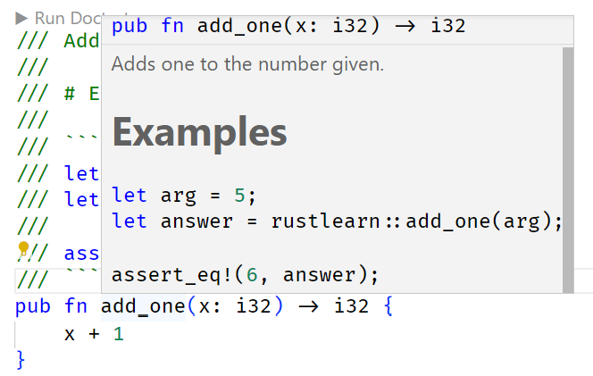
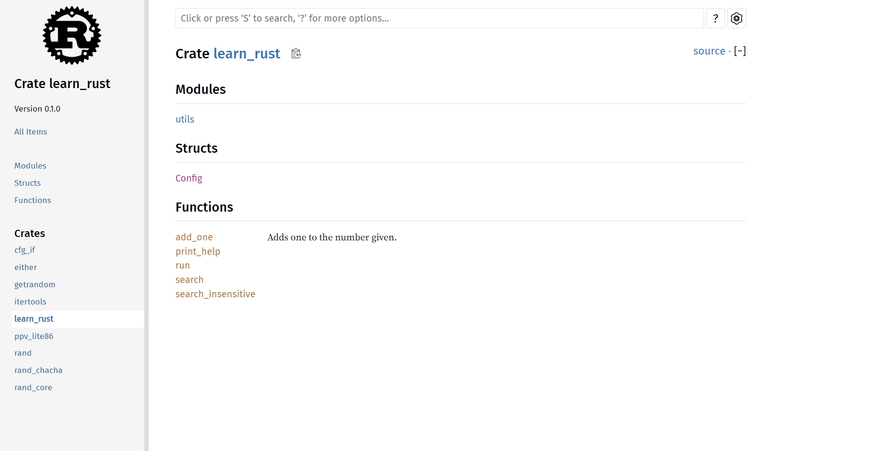
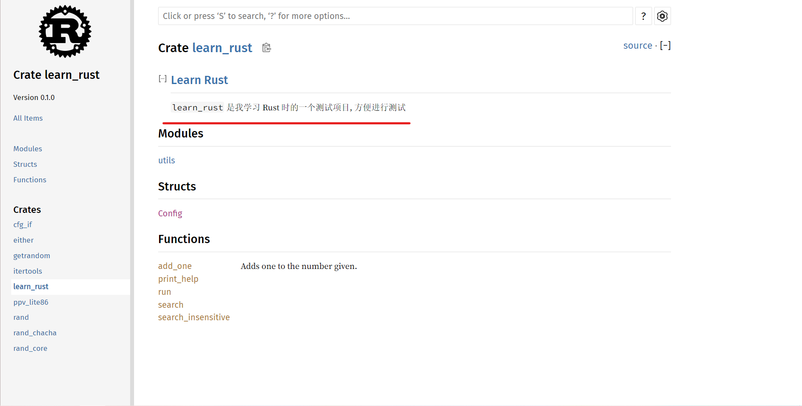
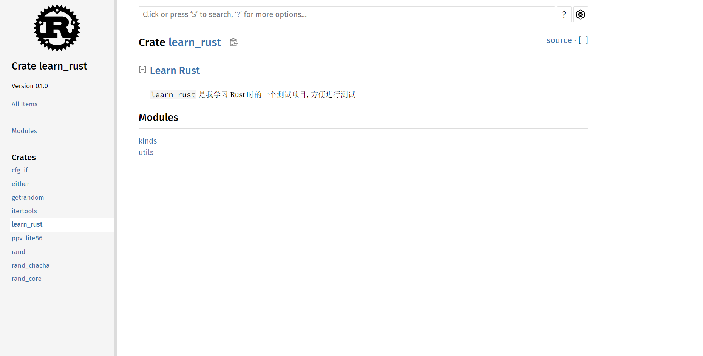
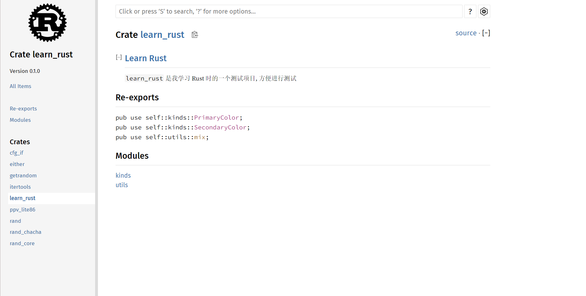
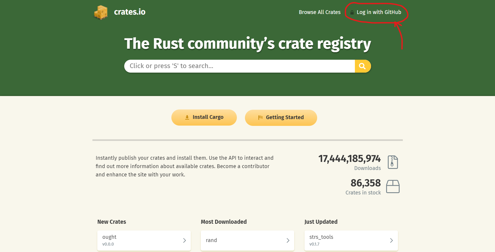
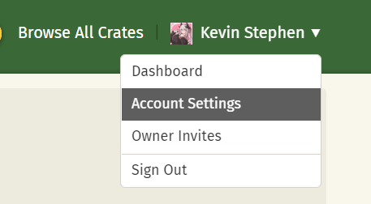
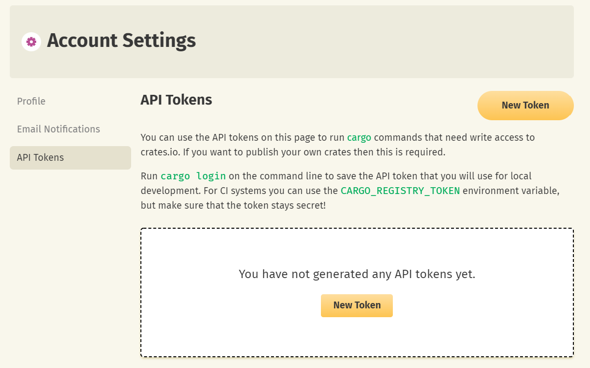

Rust 学习 12
archive time: 2022-06-23
这回来看看 cargo 打包
Rust 有一个很大的优势就是它有一个完整的完善的工具链, cargo
通过 cargo, 我们可以很轻松的完成编译, 测试, 打包这几个步骤
不过关于 cargo 打包, 有一些内容还是需要主要
release profile
profile 是预先定义好的相关的配置, 对应的有 release 和 dev 两种
每个 profile 都是可以自行配制的, 就是在 Cargo.toml 里设置
# Cargo.toml
# ...
[profile.dev]
opt-level = 0
[profile.release]
opt-level = 3
这样我们就可以覆盖默认的 profile 里的 opt-level 设置了
至于有哪些选项, 可以参考文档1
发布 Crate
我们除了可以下载 crate, 我们还可以上传我们的 crate
文档注释
在 crate 里, 文档是很重要的, 在 Rust 里, 专门有种注释来生产文档, 那就是 文档注释
文档注释 用于生成 HTML 文档, 显式公共 API 的注释还可以说明如何使用 API
甚至在 Rust 还可以进行文档测试, 即在文档里测试代码, 以保证文档和代码同步以及代码或文档的正确性
文档注释使用 /// 来实现, 支持一定的 Markdown 语法
/// Adds one to the number given.
///
/// # Examples
///
/// ```
/// let arg = 5;
/// let answer = learn_rust::add_one(arg);
///
/// assert_eq!(6, answer);
/// ```
pub fn add_one(x: i32) -> i32 {
x + 1
}效果如下图

我们可以使用 cargo doc 来生成文档
注意到在项目目录下的 target/ 目录下有了一个 doc/ 目录, 里面就是生成的文档
(base) PS projRoot> dir .\target\doc\
目录: projRoot\target\doc
Mode LastWriteTime Length Name
---- ------------- ------ ----
d----- 2022/6/23 14:14 cfg_if
d----- 2022/6/23 14:14 either
d----- 2022/6/23 14:14 getrandom
d----- 2022/6/23 14:14 implementors
d----- 2022/6/23 14:14 itertools
d----- 2022/6/23 14:14 learn_rust
d----- 2022/6/23 14:14 ppv_lite86
d----- 2022/6/23 14:14 rand
d----- 2022/6/23 14:14 rand_chacha
d----- 2022/6/23 14:14 rand_core
d----- 2022/6/23 14:14 src
-a---- 2022/6/23 14:14 0 .lock
-a---- 2022/6/23 14:14 12235 ayu.css
-a---- 2022/6/23 14:14 576 clipboard.svg
-a---- 2022/6/23 14:14 1791 COPYRIGHT.txt
-a---- 2022/6/23 14:14 123 crates.js
-a---- 2022/6/23 14:14 10683 dark.css
-a---- 2022/6/23 14:14 510 down-arrow.svg
-a---- 2022/6/23 14:14 715 favicon-16x16.png
-a---- 2022/6/23 14:14 1125 favicon-32x32.png
-a---- 2022/6/23 14:14 4298 favicon.svg
-a---- 2022/6/23 14:14 4419 FiraSans-LICENSE.txt
-a---- 2022/6/23 14:14 132780 FiraSans-Medium.woff2
-a---- 2022/6/23 14:14 129188 FiraSans-Regular.woff2
-a---- 2022/6/23 14:14 10847 LICENSE-APACHE.txt
-a---- 2022/6/23 14:14 1023 LICENSE-MIT.txt
-a---- 2022/6/23 14:14 10287 light.css
-a---- 2022/6/23 14:14 19656 main.js
-a---- 2022/6/23 14:14 4745 NanumBarunGothic-LICENSE.txt
-a---- 2022/6/23 14:14 399468 NanumBarunGothic.ttf.woff2
-a---- 2022/6/23 14:14 1853 normalize.css
-a---- 2022/6/23 14:14 97 noscript.css
-a---- 2022/6/23 14:14 3297 rust-logo.svg
-a---- 2022/6/23 14:14 28317 rustdoc.css
-a---- 2022/6/23 14:14 164833 search-index.js
-a---- 2022/6/23 14:14 34753 search.js
-a---- 2022/6/23 14:14 1425 settings.css
-a---- 2022/6/23 14:14 3792 settings.html
-a---- 2022/6/23 14:14 6064 settings.js
-a---- 2022/6/23 14:14 2019 source-files.js
-a---- 2022/6/23 14:14 4403 source-script.js
-a---- 2022/6/23 14:14 44896 SourceCodePro-It.ttf.woff2
-a---- 2022/6/23 14:14 4528 SourceCodePro-LICENSE.txt
-a---- 2022/6/23 14:14 52228 SourceCodePro-Regular.ttf.woff2
-a---- 2022/6/23 14:14 52348 SourceCodePro-Semibold.ttf.woff2
-a---- 2022/6/23 14:14 81320 SourceSerif4-Bold.ttf.woff2
-a---- 2022/6/23 14:14 59860 SourceSerif4-It.ttf.woff2
-a---- 2022/6/23 14:14 4485 SourceSerif4-LICENSE.md
-a---- 2022/6/23 14:14 76180 SourceSerif4-Regular.ttf.woff2
-a---- 2022/6/23 14:14 3556 storage.js
-a---- 2022/6/23 14:14 174 toggle-minus.svg
-a---- 2022/6/23 14:14 191 toggle-plus.svg
-a---- 2022/6/23 14:14 3764 wheel.svg
在 <projRoot>/target/doc/<projName>/index.html 就是文档的主页面了
打开后可以看到类似这样的页面, 一个很标准的 Rust 文档界面

当然, 除了手动打开, 我们可以使用 cargo doc --open 来打开页面, 效果是一样的
在文档注释里面一般有几个固定的区域
- Examples: 示例, 说明函数或代码的用法
- Panics: 可能发生 panic 的场景
- Errors: 返回 Result 或 Option 时的错误类型或者产生错误的条件
- Safty: 如果函数是 unsafe 的, 说明原因, 以及使用前提
文档测试
我们在文档里写的例子可以进行文档测试, 使用 cargo test --doc 即可
(base) PS projRoot> cargo test --doc
Finished test [optimized + debuginfo] target(s) in 0.03s
Doc-tests learn_rust
running 1 test
test src\lib.rs - add_one (line 122) ... ok
test result: ok. 1 passed; 0 failed; 0 ignored; 0 measured; 0 filtered out; finished in 0.21s
注释文档
除了为文档下的代码进行注释, 我们还可以对整个文件或者 crate 或者 模块 进行注释, 使用符号 //!
// src/lib.rs
//! # Learn Rust
//!
//! `learn_rust` 是我学习 Rust 时的一个测试项目, 方便进行测试
// ....在 src/lib.rs 里添加了这么一些注释后, 我们再打开文档, 发现文档内容也发生了变化

pub use
有时候我们需要为方便调用来导出一些公共 API, 这样就可以使用 pub use 关键字
pub use 作用是 重新导出, 创建了一个与内部私有结构不同的对外公共结构
假设我们有这么一个文件 src/lib.rs
//! # Learn Rust
//!
//! `learn_rust` 是我学习 Rust 时的一个测试项目, 方便进行测试
pub mod kinds {
/// The primary colors according to the RYB color model
pub enum PrimaryColor {
Red,
Yellow,
Blue,
}
/// The secondary colors according to the RYB color model
pub enum SecondaryColor {
Orange,
Green,
Purple,
}
}
pub mod utils {
use crate::kinds::*;
/// Combines two primary colors in equal amounts to create
/// a secondary color
pub fn mix(color1: PrimaryColor, color2: PrimaryColor) -> SecondaryColor {
SecondaryColor::Green
}
}在文档里表现出来是这样的

不是很直观, 也不清楚每个模块里的的东西
如果我们在文件里加上这几行
// src/lib.rs
pub use self::kinds::PrimaryColor;
pub use self::kinds::SecondaryColor;
pub use self::utils::mix;
// ...再看一眼文档, 会出现一个 Re-exports 栏目, 里面摆上了我们重新导出的内容, 就很直观了

在使用时, 我们也只需要 <projName>::<itemName> 即可, itemName 是你导出的内容的名字
创建 crates.io 账号
前面部分我们知道了如何写文档注释和生成文档, 现在来正式看看如何发布
再发布之前我们还需要有一个 crates.io 的账号, 这是自然的
注意看 crates.io 的主界面 (2022 年 06 月 23 日), 我们可以看到这么一个选项

注册好账号后, 我们就有了一个 crates.io 的 API Token
点击 Account Settings, 我们就可以看到一个 API Tokens 的地方

然后我们就可以生成一个新的 token 供我们使用了

有了 token, 我们就可以在 cargo 使用 cargo login 来进行登录操作
(base) PS projRoot> cargo login <API Token>
Login token for `crates.io` saved
API Token 会被存放在 <cargo-home>/credentials 里面
不过在发布前还是需要在我们的 crate 里的 [package] 添加对应元数据
- name: crate 的唯一标识
- description: 对 crate 的简单描述
- license: 许可证的标识值2, 多个许可使用
OR隔开 - version: 版本
- authors: 作者, 一个列表, 可以放多个名字
例如对于 learn_rust 我们可以这样
[package]
name = "learn_rust"
version = "0.1.0"
edition = "2021"
license = "MIT"
authors = ["kands-code"]
确保一切准备妥当, 我们就可以使用 cargo publish 来发布 crate 了
发布之后
发布 crate 之后, 我们是 不能够 删除 crate 的, 不过我们可以 撤回(yank) 一个 crate 版本
yank 可以防止新项目依赖于该版本, 但是无法阻止继续使用其作为依赖
yank 了就意味着
- 所有产生
Cargo.lock的项目都不会中断 - 任何将来生成的
Cargo.lock文件都不会使用被 yank 的版本
cargo yank --vers <version>
我们还可以取消 yank
cargo yank --vers <version> --undo
Cargo 工作空间
有些时候, 为了模块化项目, 我们需要将项目拆成多个 crate
而工作空间就是一套共享 Cargo.lock 和 输出文件夹 的包
对于作为工作空间的目录, 我们需要准备一个 Cargo.toml 文件, 里面设置工作空间
[workspace]
members = ["adder", "add-one"]
然后在目录下使用 cargo new adder 和 cargo new add-one --lib 来创建这两个成员
我们使用 cargo build 发现, 在 adder/ 和 add-one/ 目录下都没有 target/ 目录, 而是在工作空间目录有一个统一的 target/
(base) PS ws> dir .
Directory: ws
Mode LastWriteTime Length Name
---- ------------- ------ ----
d---- 2022/6/23 16:17 add-one
d---- 2022/6/23 16:15 adder
d---- 2022/6/23 16:14 target
-a--- 2022/6/23 16:14 8 .gitignore
-a--- 2022/6/23 16:18 197 Cargo.lock
-a--- 2022/6/23 16:18 45 Cargo.toml
如果需要说明这两个 crate 相互依赖, 需要在对应的 crate 里说明
# adder/Cargo.toml
[package]
name = "adder"
version = "0.1.0"
edition = "2021"
[dependencies]
add-one = { path = "../add-one" }
我们如果要执行工作空间中某一特定 crate, 则需要 cargo run -p <crate-name>
(base) PS ws> cargo run -p adder
Finished dev [unoptimized + debuginfo] target(s) in 0.01s
Running `target\debug\adder.exe`
31工作空间的一个很重要的意义就是同步版本, 因为一个工作空间内的 crate 都共用一个 Cargo.lock, 保证了使用的库的版本统一
这样一来, 一个工作空间内的 crate 都是相互兼容的
安装二进制 crate
我们可以从 crates.io 中安装二进制 crate, 使用 cargo install <crate-name> 即可
这个就无需演示了
扩展 cargo
如果二进制名称为 cargo-xxx, 则我们可以使用 cargo xxx 来执行这个二进制名字, 看起来就是扩展了 cargo 的功能
好, cargo 就算学得差不多了, 开摸!
相关文档 Cargo.toml, Profiles
可以在 这里 查找, 对应 identifier 一栏